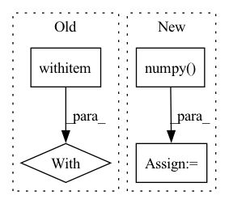

Pattern ID :12834
Before Change
image = self.scheduler.step(model_output, t, image, eta)["prev_sample"]
// decode image with vae
with torch .no_grad():
image = self.vqvae.decode(image)
return {"sample": image}
After Change
image = self.vqvae.decode(latents)
image = (image / 2 + 0.5).clamp(0, 1)
image = image.cpu().permute(0, 2, 3, 1).numpy()
return {"sample": image}
In pattern: SUPERPATTERN
Frequency: 4
Non-data size: 4
Instances Fragment ID: 43401203
Project Name: huggingface/diffusers
Commit Name: 8b4371f70fb5e791f4467a30375ef226bc5186a9
Time: 2022-07-20
Author: anton@huggingface.co
File Name: src/diffusers/pipelines/latent_diffusion_uncond/pipeline_latent_diffusion_uncond.py
M Class Name: LatentDiffusionUncondPipeline
N Class Name: LatentDiffusionUncondPipeline
M Method Name: __call__(6)
N Method Name: __call__(6)
M Parent Class: DiffusionPipeline
N Parent Class: DiffusionPipeline
M File Name: src/diffusers/pipelines/latent_diffusion_uncond/pipeline_latent_diffusion_uncond.py
N File Name: src/diffusers/pipelines/latent_diffusion_uncond/pipeline_latent_diffusion_uncond.py
M Start Line: 26
M End Line: 52
N Start Line: 26
N End Line: 49
Before Change
distortions = []
K = range(1, 3) // TODO there might be more then 2 clusters on sone occasions
with warnings .catch_warnings():
// https://stackoverflow.com/questions/48100939/how-to-detect-a-scikit-learn-warning-programmatically
warnings.filterwarnings("error", category=ConvergenceWarning)
for k in K:
try:
kmeanModel = KMeans(n_clusters=k, random_state=0).fit(selected_features)After Change
selected_features = features[non_empty_ids, panel_id, :].cpu()
K = range(1, 3) // TODO there might be more then 2 clusters on sone occasions
gaps, labels_2_class = gap_statistics(selected_features.numpy() , ks=K)
// reduction in quality with number of classes increase -- or no differences in elements at all
if gaps[0] > gaps[1] or gaps[1] is None or gaps[0] is None or np.isnan(gaps[0]) or np.isnan(gaps[1]): Fragment ID: 43401200
Project Name: maria-korosteleva/garment-pattern-estimation
Commit Name: 96a7f8ea4748e1186019add8475257f813b81a69
Time: 2021-06-18
Author: mariako@kaist.ac.kr
File Name: nn/metrics.py
M Class Name: ComposedPatternLoss
N Class Name: ComposedPatternLoss
M Method Name: _att_cluster_analysis(4)
N Method Name: _att_cluster_analysis(4)
M Parent Class:
N Parent Class:
M File Name: nn/metrics.py
N File Name: nn/metrics.py
M Start Line: 1049
M End Line: 1075
N Start Line: 1052
N End Line: 1061
Before Change
sigma_t = self.scheduler.sigmas[i] * torch.ones(shape[0], device=device)
for _ in range(self.scheduler.correct_steps):
with torch .no_grad():
model_output = self.model(sample, sigma_t)
if isinstance(model_output, dict):
model_output = model_output["sample"]After Change
sample, sample_mean = output["prev_sample"], output["prev_sample_mean"]
sample = sample.clamp(0, 1)
sample = sample.cpu().permute(0, 2, 3, 1).numpy()
return {"sample": sample}
Fragment ID: 43401199
Project Name: huggingface/diffusers
Commit Name: 8b4371f70fb5e791f4467a30375ef226bc5186a9
Time: 2022-07-20
Author: anton@huggingface.co
File Name: src/diffusers/pipelines/score_sde_ve/pipeline_score_sde_ve.py
M Class Name: ScoreSdeVePipeline
N Class Name: ScoreSdeVePipeline
M Method Name: __call__(3)
N Method Name: __call__(3)
M Parent Class: DiffusionPipeline
N Parent Class: DiffusionPipeline
M File Name: src/diffusers/pipelines/score_sde_ve/pipeline_score_sde_ve.py
N File Name: src/diffusers/pipelines/score_sde_ve/pipeline_score_sde_ve.py
M Start Line: 27
M End Line: 48
N Start Line: 28
N End Line: 51
Before Change
elif "ANETensor" in str(type(data)):
if device == Device.ANE: return data
with ProfileOp ("toCPU", [data]):
data = data.data().astype(np.float32)
if not isinstance(data, np.ndarray):
data = np.array(data, dtype=np.float32)After Change
cl.enqueue_copy(cl_queue, data, old.cl, is_blocking=True)
if str(type(data)).startswith("torch"):
data = data.numpy()
if not isinstance(data, np.ndarray):
data = np.array(data, dtype=np.float32)
Fragment ID: 43401196
Project Name: geohot/tinygrad
Commit Name: 641b1dbb40f95a478cddbdedd7ee312072e39254
Time: 2021-10-30
Author: geohot@gmail.com
File Name: tinygrad/tensor.py
M Class Name: Tensor
N Class Name: Tensor
M Method Name: _move_data(2)
N Method Name: _move_data(2)
M Parent Class:
N Parent Class:
M File Name: tinygrad/tensor.py
N File Name: tinygrad/tensor.py
M Start Line: 164
M End Line: 192
N Start Line: 158
N End Line: 183